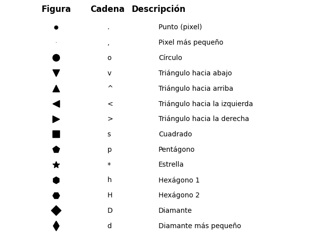

Anexos#
En esta sección se presentan algunos temas para la personalización de las gráficas como podría ser modifcar las líneas, marcadores, colores, barras de colores, estilos, etc. en las visualizaciones.
Estilos#
Para cambiar el estilo de una gráfica, como la gama de colores, las fuentes, entre otros elementos se puede usar la función use() del módulo style.
Tip
Para restaurar al estilo por default usar: plt.style.use('default')
# Modificar estilo de las gráficas
plt.style.use(style_name = 'default')
# Definir estilo de manera temporal
with plt.style.context('stylename'):
# Definición de la gráfica
# Definir estilo de seaborn
import seaborn as sns
sns.set()
style_name -
str: Es el nombre del estilo. Algunos estilos disponibles son:classic: Estilo clásico de
matplotlib.ggplot: Simula las gráficas creadas en ggplot con R.
default: Es el default con lo que
matplotlibgrafica.seaborn-colorblind: Usa colores amigables con personas daltónicas.
grayscale: Gráfica en escala de grises.
Para enlistar todos los estilos disponibles usar:
plt.style.available
Para utilizar el estilo de
seabornusarsns.set(), el cual se debe de indicar antes de definir cualquier gráfica.Para ver todos los estilos disponibles y visualizar cómo se ven, visitar la documentación.
Para cambiar el estilo de manera temporal en una gráfica en específico y no afectar toda la sesión utilizar la función
plt.style.contexty un administrador de contextos.
Markers#
Para establecer el parámetro marker se utiliza una cadena para indicar el tipo de marcados. Los más comunes son:
{kind=link}

Note
Para una lista completa vistar la documentación.
Lines#
El argumento linestyle se puede de las siguientes maneras:
Cadena |
Nombre |
Descripción |
|---|---|---|
|
‘solid’ |
Línea sólida |
|
‘dashed’ |
Línea intermitente |
|
‘dashdot’ |
Línea de guiones y puntos |
|
‘dotted’ |
Línea de puntos |
Personalizables:
Se puede utilizar estilos personalizados con un tuple :
# Linestyles personalizados
(offset, (on_off_seq))
offset: Indica la posición relativa en relación con los datos en x desde donde se debe de mostrar la línea. Este valor está en las mismas unidades que x, tal cual es el valor de x donde debe iniciar la línea.
on_off_seq: Es para indicar el patrón de la línea, se define por pares. El primer elemento es cuántos puntos consecutivos (sin espacios) tendrá el patrón, el segundo elemento es cuántos puntos vacíos dejar entre cada patrón de puntos (el definido en el primer elemento Ejemplos:
(0, (1,1)) -> _ _ _ _ _ _ _ _
(0, (2,1)) -> __ __ __ __ __ __
Se puede poner más de un par, para un patrón más complejo:
(0, (3, 3, 1, 3)) -> ___ _ ___ _ ___IMPORTANTE: Los ejemplos de aquí son ilustrativos, se hicieron usando guión bajo, pero en realidad son puntos.
Para más información visitar la documentación.
Colores#
El argumento color se puede definir de las siguientes maneras:
Tuple RGB o RGBA -
tuplede 3 o 4 elementos entre [0, 1]: Representando colores RGB o RGBA (alpha=1 es opaco), por ejemplo:(0.1, 0.2, 0.3).Cadena hexadécimal (RGB o RGBA) -
str: Código que represente un número en formato hexadécimal. Ejemplo:'#0f0f0f'.Las cadenas se pueden consultar en esta página en la parte de Hex o #):
Cadena de escala de grises -
strde un número entre [0, 1]: Representa la escala de gris, donde 1 es negro y 0 es blanco. Ejemplo'0.5'.Color xkcd -
strcon prefijo ‘xkcd:’ Son colores con nombres. Ejemplo'xkcd:sky blue'.Las cadenas se pueden consultar en esta página.
Colores con Nombre -
str: Los nombres se pueden consultar en esta página.Colores X11 – str: Los colores se pueden consultar en esta página.
Carácter:
Caracter |
Descripción |
|---|---|
|
Azul |
|
Verde |
|
Rojo |
|
Azul cielo |
|
Morado |
|
Amarillo |
|
Negro |
|
Blanco |
Paleta categórica ‘T10’:
Caracter |
Descripción |
|---|---|
|
Azul |
|
Verde |
|
Rojo |
|
Azul cielo |
|
Morado |
|
Café |
|
Rosa |
|
Gris |
|
Naranja |
|
Olivo |
ColorMap#
Para poder aplicar un mapeo de color a una gráfica, ésta debe de tener el parámetro cmap o colormap, simplemente se debe definir el parámetro con el nombre de una mapa de color válido. Además el argumento color debe de tener un array-like de valores los cuales se mapearán a los valores de los datos por posición, para definir el color de cada dato.
Algunos colormaps válidos son:
Secuencia uniforme.
‘viridis’
‘plasma’
‘inferno’
‘magma’
‘cividis’
Secuencial:
‘Greys’
‘Purples’
‘Blues’
‘Oranges’
‘Reds’
‘Greens’
Divergentes (divergen desde la mitad hacía dos colores distintos):
‘coolwarm’
‘seismic’
‘vanimo’
Cíclicos:
‘twilight’
‘hsv’
Categóricos:
‘Pastel1’
‘Paired’
‘Dark2’
‘Set1’
Existen una versión al revés de cada colormap, para ello solo agregar como sufijo ‘r’ al nombre, por ejemplo ‘viridis_r’.
Para más estilos y visualización de las paletas visitar la documentación.


Color Map Personalizados#
Es posible crear un colormap personalizado con diccionarios. Es particularmente útil cuando se quiere establecer un color para cada valor de una variable categórica. Para ello en el diccionario usar como keys cada uno de los valores de la variable categórica y como values el color que tendrá ese valor, posteriormente al gráficar usar el argumento c de la siguiente manera:
# Definir diccionario
my_colormap = {'cat1': col1, 'cat2': col2, ...}
# Mapear colores a valores
plt.plot(df['x'], df['y'], c = df['var_cat'].map(my_colormap))
‘var_cat’ es el nombre de una variable categórica.
my_colormap es el diccionario con los valores de la variable categórica como keys y el color como values.
Hacer esto es equivalente a usar el argumento hue en
seaborn.
Color Map Discretos#
Por default los colormap son continuos, para crear un colormap discreto hacerlo de la siguiente manera:
plt.scatter(I, cmap = plt.cm.get_cmap('cmap_name', N))
‘cmap_name’: Es el nombre de un colormap válido.
N -
int: Es el número de categorías discretas que se quieren poner en el colormap.
Cadenas de Formato (fmt)#
Una cadena de formato es una cadena para especificar el tipo de marker, tipo de linea y el color de los mismos en una gráfica. La sintaxis general es:
# Cadena de formato
fmt = '[marker = 'o'][line='-'][color='b']'
Cada una de las partes es opcional.
Si se indica line, pero no marker, entonces, los datos serán líneas sin markers.
Si se omite una parte entonces no se pondrá esa parte.
Ejemplos de fmt:
'b' # markers azules con forma por default ('o')
'or' # Círculos rojos
'-g' # Línea sólida verde
'--' # Línea intermitente con color por default (azul)
'^k:' # Markers de triángulos negros, conectados por una línea de puntos
Marker#
Los markers admitidos en fmt son:
Caracter |
Descripción |
|---|---|
‘.’ |
Punto |
‘,’ |
Pixel |
‘o’ |
Círculo relleno |
‘v’ |
Tríangulo invertido |
‘^’ |
Triángulo |
‘<’ |
Triángulo a la izquierda |
‘>’ |
Triángulo a la derecha |
‘1’ |
Tríangulo pequeño invertido |
‘2’ |
Triángulo pequeño |
‘3’ |
Triángulo pequeño a la izquierda |
‘4’ |
Triángulo pequeño a la derecha |
‘8’ |
Octágono |
‘s’ |
Cuadrado |
‘p’ |
Pentágono |
‘P’ |
Cruz rellena (+) |
‘*’ |
Estrella |
‘h’ |
Hexágono |
‘H’ |
Hexágono |
‘+’ |
plus marker |
‘x’ |
Equis (X) |
‘X’ |
Equis rellena |
‘D’ |
Diamante relleno |
‘d’ |
Diamante |
‘ |
‘ |
‘_’ |
Línea horizontal |
Para más información visitar la documentación.
Line#
Los tipos de líneas admitidos en fmt son:
Caracter |
Descripción |
|---|---|
‘-’ |
Línea sólida |
‘–’ |
Línea intermitente |
‘-.’ |
Línea de guiones y puntos |
‘:’ |
Línea de puntos |
Para más información visitar la documentación.
Color#
Los colores admitidos en fmt son:
Caracter |
Descripción |
|---|---|
‘b’ |
Azul |
‘g’ |
Verde |
‘r’ |
Rojo |
‘c’ |
Azul cielo |
‘m’ |
Morado |
‘y’ |
Amarillo |
‘k’ |
Negro |
‘w’ |
Blanco |